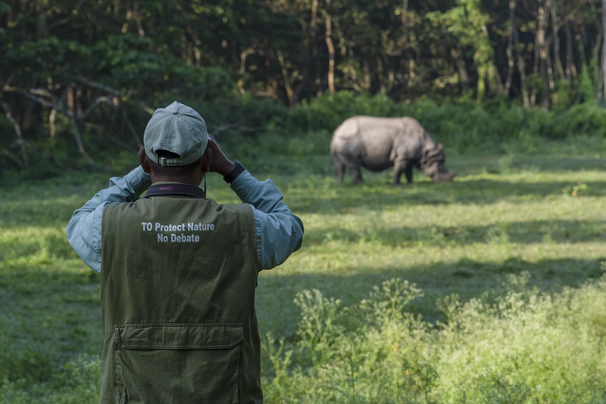

Nestled amidst the vibrant tapestry of Sri Lanka's landscapes, the Department of Wildlife Conservation (DWC) stands as a steadfast guardian of the island's rich biodiversity. Established in 1968, the DWC shoulders the momentous responsibility of protecting a legacy that transcends mere flora and fauna; it safeguards the very essence of Sri Lanka's identity, woven from the threads of ancient ecosystems and a deep reverence for nature.
The DWC's story is one of dedication and unwavering commitment. It encompasses the tireless efforts of passionate individuals who toil relentlessly to preserve the majesty of Sri Lanka's wildlife – from the majestic Asian elephant roaming the verdant plains to the elusive leopard gracing the dappled light of the rainforest. It's a narrative whispered in the rustle of leaves within protected reserves, echoed in the trumpeting calls of rescued elephants, and etched in the vibrant plumage of endemic birds soaring through clear skies.
This isn't just a department; it's a symphony of conservation efforts echoing across diverse landscapes. It's the vigilant eye that monitors protected areas, the gentle hand that nurtures injured wildlife back to health, and the voice that advocates for responsible coexistence between humans and nature.
In the tapestry of Sri Lanka's natural heritage, the DWC is the thread that binds generations together. It's the promise whispered to future hearts, ensuring that the island's breathtaking biodiversity continues to enthrall and inspire, generation after generation.